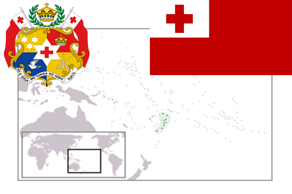

To`liq nomi: Tonga Qirolligi
Region: Tinch okeani
Qonunchilik shakli: Konstitutsiyali monarxiya
Mustaqillik kuni: 4 iyun 1970-yil
Poytaxt: Nukualofa
Maydoni: 748 km²
Chegaradosh davlatlari: Yo’q
Aholisi: 103 252 (2013-yil)
Aholi zichligi: 138,04 /км²
Aholining o`rtacha yoshi: 72,94 yil
Rasmiy tili: tongan va ingliz tili
Dini: Xristian
Pul birligi: Panga
Telefon prefiksi: +676
Internet domen: .to
Xalqaro tashkilotlarga a`zoligi: BMT
Dengiz va okeanlarga chiqishi: Tinch okeani
YIM: Butun: $439 mil.(2011-yil)
Yirik shaharlari: Nukualofa